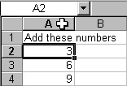
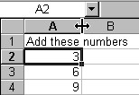
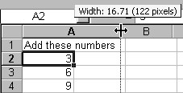
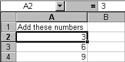

Free
computer Tutorials
|
Free
computer Tutorials
|
|
 HOME HOME
|
Stay at Home and Learn | |||||
Widen an Excel Column
To widen a column, do the following:


|
||||||
|
||||||
|  |  | |||||
|
Widening an Excel Column
|
The Result
|
|||||
| You can widen a row in exactly the same way. We'll now see how to centre those numbers in their cells, and format that text a little.
Formatting cellsCentring text in a cell comes under the heading of Formatting. Things like making the text bold, changing the font, and adding some colour also come under Formatting. There is a menu in Excel devoted to the subject - the Format menu. Let's start with centring the data in the cells. Before you can Format any cell data, you have to "tell" Excel which cells you want to change. You do this by highlighting the cells. To highlight cells, do the following:
As you can see, the cells A1, A2, A3, and A4 are a different colour to the other cells, which are white. Our four cells also have the darker border around them. This is because they are highlighted. Once cells have been highlighted, you can do something with them. We'll format the cells we've highlighted.
In the next part, we'll see how to centre data in the cell. |
||||||